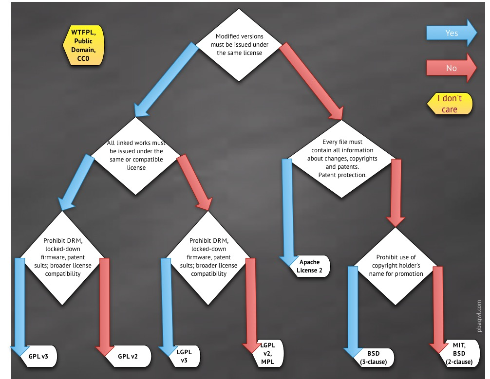

近期公司全面拥抱开源，在选择开源协议方面遇到了一些问题，查阅了很多资料，特此总结~~
本文首发于 2021-08-19 00:37:15
前言
对于很多刚踏入开源软件这个行业的小伙伴来说，在编码过程中难免会用到其他人的成果，如果你足够细心，很容易注意到即使是一小段代码，优秀的作者都在文件开头附上一段关于版权的声明，比如 Licensed under the MIT license。同时，一些博客也会标明”此文章采用 CC BY 4.0 CN 协议“。
如果我们拷贝了别人的代码或文章却没注意版权问题，在国外法律意识特别强的环境下（国内版权意识也在逐步加强），那么我们的作品会因触犯别人的权益而违法。即使是最开放的开源协议，最低要求也是保留原作者对代码的声明，所以开源不等于免费，也不等于没有约束。
何为 LICENCE？
LICENCE 是软件的授权许可，详细说明了获得代码后拥有的权利，哪些操作是允许的，哪些操作是禁止的。软件的版权许可证可有很多方式，本文仅限于讨论开源软件协议 Open Source License。
对于大多数人来说，没必要花大把时间去写许可协议，选择一种比较流行的开源协议就足够了，省时省力，更便于自己作品的传播，于人于己都有利。
PS：
说句题外话，很多国外开发者在尊重他人劳动成果方面做得很好，如果A的作品是因为B的作品的启发而来，A甚至都没有使用B任何一句代码，但A会在他的作品里面指明是受到了B的启发：
Inspired by XXX link: http://www.xxxx.com。
快速选择开源协议
如果你不想了解太多，只是想要一个简直直接的答案，下面给出的建议或许适合你。本小节关于协议地址来自于 GitHub choosealicence 。
简单宽松的协议：
如果你只想要一个简单点的协议不想太麻烦的话。
MIT协议相对宽松，此协议允许别人以任何方式使用你的代码同时署名原作者，但原作者不承担代码使用后的风险，当然也没有技术支持的义务。
考虑有专利的情况：
如果你的作品中涉及到专利相关。
Apache协议也是个相对宽松的协议，与MIT类似，但它指明了作者对用户专利上的一些授权（我的理解是软件作品中含有专利，但它授权你可以免费使用）。
促进代码分享：
如果你在乎作品的传播和别人的修改，希望别人也以相同的协议分享出来。
GPL（V2或V3）协议要求代码分发者或者以此代码为基础开发出来的衍生作品需要以同样的协议来发布，也必须开源，因此，该协议具有”传染性“。
乌克兰程序员Paul Bagwell，画了一张分析图，说明应该怎么选择。只用两分钟，你就能搞清楚这六种开源协议之间的最大区别。

国内大神阮一峰的汉化版本：
主流开源许可协议（Open Source License）
世界上的开源许可协议（Open Source License）大概有上百种，常用的开源软件协议大致有：
由宽松到严紧排序，常用的开源协议有：
- MIT
- BSD
- Apache
- LGPL
- GPL
主要区别：
- MIT、BSD 开源协议都源自大学，体现了简单、开放和包容的特点。
- MIT、BSD、Apache 三者都支持闭源的后续开发。
- GPL、LGPL 传染性开源，编译的代码里用了这里的代码，都必须开源。
MIT
来源于大学，MIT 开源协议是史上最为简洁、慷慨的开源协议之一。作者只想保留版权，而无任何其他了限制。也就是说，你必须在你的发行版里包含原许可协议的声明，无论你是以二进制发布的还是以源代码发布的。
特点：
- 用户可以拿你的代码做任何想做的事情。
- 用户在项目副本中要包含版权声明和许可声明。
- 你无需承担任何责任。
代表作品：
BSD
BSD可证也来源于大学，与MIT差不多，也非常简单、慷慨。
BSD开源协议是一个给于使用者很大自由的协议。基本上使用者可以”为所欲为”,可以自由的使用、修改源代码，也可以将修改后的代码作为开源或者专有软件再发布。前提是当你发布使用了BSD协议的代码，或者以BSD协议代码为基础开发自己的产品时，需要满足三个条件：
- 如果再发布的产品中包含源代码，则在源代码中必须带有原代码中的BSD协议。
- 如果再发布的只是二进制类库/软件，则需要在类库/软件的文档和版权声明中包含原来代码中的BSD协议。
- 不可以用开源代码的作者/机构名字和原来产品的名字做市场推广。
BSD 开源协议鼓励代码共享，但需要尊重代码作者的著作权。BSD 开源协议允许使用者修改和重新发布代码，也允许使用或在BSD代码上开发商业软件发布、销售，是对商业集成很友好的协议。因此，很多公司在选用开源产品的时候都首选BSD协议。
Apache Licence
来自 Apache，类似 MIT 开源协议，但它重视专利权。
Apache Licence 是著名的非盈利开源组织 Apache 采用的协议。该协议和BSD类似，同样鼓励代码共享和尊重原作者的著作权，同样允许修改代码、再发布（作为开源或商业软件）。需要满足的条件也和BSD类似：
- 需要为使用代码的用户提供一份 Apache Licence 。
- 如果你修改了代码，需要在被修改的文件中说明。
- 在延伸的代码中（修改和由源代码衍生的代码中）需要带有原来代码中的协议、商标、专利声明和其他原作者规定需要包含的说明。
- 如果再发布的产品中包含一个
Notice文件，则在Notice文件中需要带有 Apache Licence 。你可以在Notice中增加自己的许可，但不可对 Apache Licence 构成更改。
Apache Licence 也是对商业应用友好的许可，使用者也可以在需要的时候修改代码来满足需要并作为开源或商业产品发布/销售。
代表作品：
LGPL
LGPL（GNU LESSER GENERAL PUBLIC LICENSE）来自于自由软件联盟GNU，可以翻译为更宽松的GPL协议，也属于传染性开源协议。
LGPL是GPL的一个主要为类库使用设计的开源协议。和GPL要求任何使用/修改/衍生之GPL类库的的软件必须采用GPL协议不同，LGPL 允许商业软件通过类库引用(link)方式使用LGPL类库而不需要开源商业软件的代码。这使得采用LGPL协议的开源代码可以被商业软件作为类库引用并发布和销售。
但是如果修改LGPL协议的代码或者衍生，则所有修改的代码，涉及修改部分的额外代码和衍生的代码都必须采用LGPL协议，因此，LGPL协议的开源代码很适合作为第三方类库被商业软件引用，但不适合希望以LGPL协议代码为基础，通过修改和衍生的方式做二次开发的商业软件采用。
GPL/LGPL都保障原作者的知识产权，避免有人利用开源代码复制并开发类似的产品。
GPL
GPL（GNU GENERAL PUBLIC LICENSE）来源于自由软件联盟GNU，GPL/LGPL侧重于代码及衍生代码的开源与免费使用。
GPL协议的主要内容是只要在一个软件中使用（”使用”指类库引用，修改后的代码或者衍生代码）GPL 协议的产品，则该软件产品必须也采用GPL协议，既必须也是开源和免费。这就是所谓的”传染性”。
由于GPL严格要求使用了GPL类库的软件产品必须使用GPL协议，对于使用GPL协议的开源代码，商业软件或者对代码有保密要求的部门就不适合集成/采用作为类库和二次开发的基础。
我们很熟悉的Linux就是采用了GPL。GPL协议和BSD, Apache Licence等鼓励代码重用的许可很不一样。GPL的出发点是代码的开源/免费使用/引用/修改和衍生代码的开源/免费使用，但不允许修改后和衍生的代码做为闭源的商业软件发布和销售。
其它细节和BSD/Apache等协议类似。
代表作品：
更多开源协议对比
下方表格中出现的用词的解释：
- 协议和版权信息(License and copyright notice)：在代码中保留作者提供的协议和版权信息。
- 声明变更(State Changes)：在代码中声明对原来代码的重大修改及变更。
- 公开源码(Disclose Source)：代码必需公开。
- 库引用(Library usage)：该库可以用于商业软件中。
- 责任承担(Hold Liable)：代码的作者承担代码使用后的风险及产生的后果。如果禁止，那么作者将不会承担责任，可以理解为免责条款。
- 商标使用(Use Trademark)：可以使用作者的姓名，作品的Logo，或商标。
- 附加协议(Sublicensing)：允许在软件分发传播过程中附加上原来没有的协议条款等。
| 协议 | 描述 | 要求 | 允许 | 禁止 |
|---|---|---|---|---|
| Apache | 一个比较宽松且简明地指出了专利授权的协议。 | 1. 协议和版权信息 2. 声明变更 |
1. 商用 2. 分发 3. 修改 4. 专利授权 5. 私用 6. 附加协议 |
1. 责任承担（作者免责） 2. 商标使用 |
| GPL | 应用最广泛的开源协议，拥有较强的版权自由（copyleft）要求。 衍生代码的分发需开源并且也要遵守此协议。 此协议有许多变种，不同变种的要求略有不同。 |
1. 公开源码 2. 协议和版权信息 3. 声明变更 |
1. 商用 2. 分发 3. 修改 4. 专利授权 5. 私用 |
1. 责任承担 2. 附加协议 |
| MIT | 此协议宽松简单。在适当标明来源及免责的情况下， 它允许你对代码进行任何形式的使用。 |
1. 协议和版权信息 | 1. 商用 2. 分发 3. 修改 4. 私用 5. 附加协议 |
1. 责任承担 |
| Artistic | Perl社区最钟爱此协议。 要求更改后的软件不能影响原软件的使用。 |
1. 协议和版权信息 2. 声明变更 |
1. 商用 2. 分发 3. 修改 4. 私用 5. 附加协议 |
1. 责任承担 2. 商标使用 |
| BSD | 较为宽松的协议，有两个变种BSD 2-Clause 和BSD 3-Clause， 两者都与MIT协议只存在细微差异。 |
1. 协议和版权信息 | 1. 商用 2. 分发 3. 修改 4. 私用 5. 附加协议 |
1. 责任承担 |
| Eclipse | 对商用非常友好的协议，可以用于软件的商业授权。 包含对专利的优雅授权，也可以对相关代码应用商业协议。 |
1. 公开源码 2. 协议和版权信息 |
1. 商用 2. 分发 3. 修改 4. 专利授权 5. 私用 6. 附加协议 |
1. 责任承担 |
| LGPL | 主要用于一些代码库。 衍生代码可以以此协议发布（也可以用其他协议）， 但与此协议相关的代码必需遵循此协议。 |
1. 公开源码 2. 库引用 3. 协议和版权信息 |
1. 商用 2. 分发 3. 修改 4. 专利授权 5. 私用 6. 附加协议 |
1. 责任承担 |
| Mozilla | Mozilla Public License(MPL 2.0)是由Mozilla基金创建维护的， 旨在较为宽松的BSD协议和更加互惠的GPL协议中找一个折衷点。 |
1. 公开源码 2. 协议和版权信息 |
1. 商用 2. 分发 3. 修改 4. 专利授权 5. 私用 6. 附加协议 |
1. 责任承担 2. 商标使用 |
| No license | 作者保留所有权利，不允许他人分发，复制或者创造衍生物。 当你将代码发表在一些网站上时需要遵守该网站的协议， 此协议可能包含了一些对你劳动成果的授权许可。 比如将代码发布到GitHub，那么就必须同意别人查看和fork。 |
1. 协议和版权信息 | 1. 商用 2. 私用 |
1. 分发 2. 修改 3. 附加协议 |
| Public domain dedication | 在许多国家，默认版权归作者自动拥有， 所以Unlicense协议提供了一种通用的模板。 此协议表明作者放弃版权，将劳动成果无私贡献出来， 会丧失作品全部权利，包括在MIT/X11中定义的无担保权利。 |
1. N/A | 1. 商用 2. 分发 3. 修改 4. 私用 |
1. 责任承担 |
参考链接
- https://github.com/github/choosealicense.com
- https://opensource.org/licenses
- https://www.cnblogs.com/Wayou/p/how_to_choose_a_license.html
- https://zhuanlan.zhihu.com/p/87855729
欢迎关注我的微信公众号【数据库内核】：分享主流开源数据库和存储引擎相关技术。

| 标题 | 网址 |
|---|---|
| GitHub | https://dbkernel.github.io |
| 知乎 | https://www.zhihu.com/people/dbkernel/posts |
| 思否（SegmentFault） | https://segmentfault.com/u/dbkernel |
| 掘金 | https://juejin.im/user/5e9d3ed251882538083fed1f/posts |
| 开源中国（oschina） | https://my.oschina.net/dbkernel |
| 博客园（cnblogs） | https://www.cnblogs.com/dbkernel |